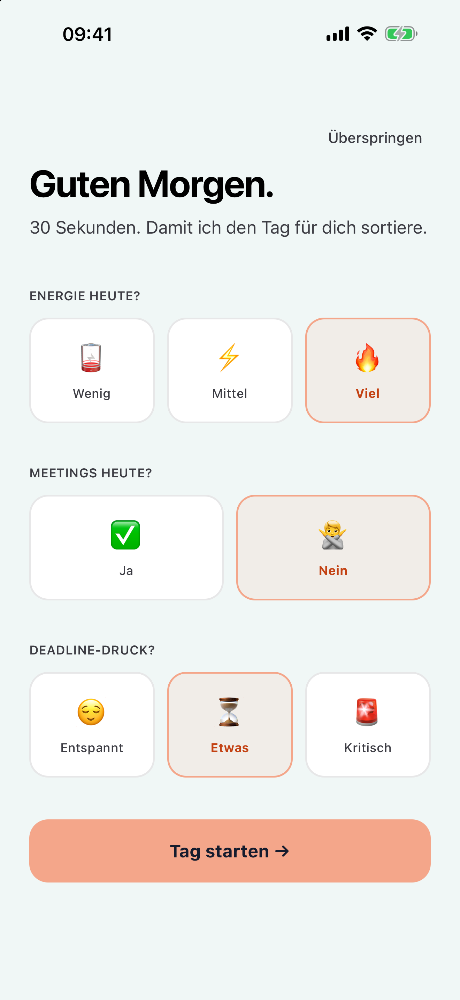
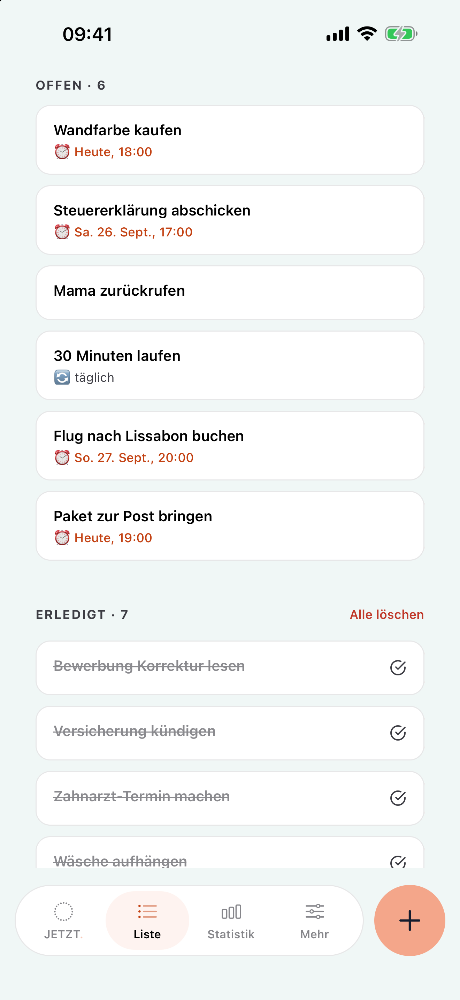
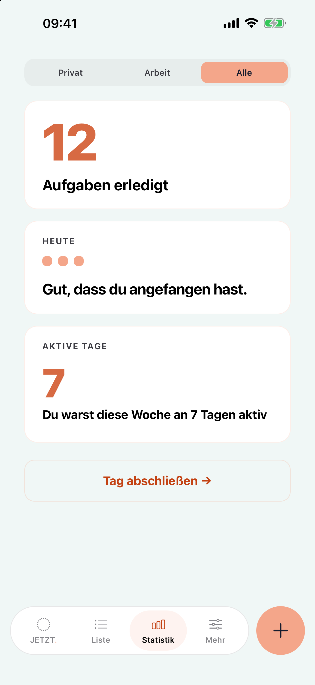

JETZT
Wandfarbe kaufen
Mehr Beispiele gibt es hier nicht. In der App wäre jetzt die nächste Karte dran.
Eine Karte nach der anderen. Für alle, die bei 47 offenen Aufgaben erstarren, statt anzufangen.
Für iPhone. Pro ab 17,99 € im Jahr, eine Woche kostenlos testen.
Wandfarbe kaufen
Mehr Beispiele gibt es hier nicht. In der App wäre jetzt die nächste Karte dran.
Heute erledigt 0In der Liste 46Beispiel
Sie sind für Leute gebaut, die eine Liste sehen und loslegen. Wenn du beim Anblick der Liste schon müde wirst, liegt das nicht an dir.
Beispiel: 47 offene Aufgaben. JETZT. ruft eine davon auf, die anderen warten.
Du öffnest die App und siehst 47 Aufgaben. Du machst die App wieder zu.Das ist Überforderung, keine Faulheit.
Ein Zähler für erledigte Tage am Stück, der wieder bei null anfängt, sobald du einmal aussetzt.Am nächsten Morgen hast du dann noch weniger Lust.
Eine Liste, die jeden Tag länger wird und dich jedes Mal daran erinnert, was noch offen ist.
Morgens
Wie viel Energie hast du? Stehen Meetings an? Drängt etwas? Daraus baut JETZT. deinen Tag und zeigt dir nur, was heute realistisch ist.

Zwischendurch
Tipp „Morgen um 12 zum Zahnarzt“, und der Termin steht drin. Alles landet in der Liste, auf der Karte siehst du aber nur, was gerade passt.
Apple Intelligence, direkt auf dem iPhoneFür die Erkennung verlassen deine Aufgaben das Gerät nicht.

Abends
Die Statistik zeigt deine Woche und was heute erledigt ist. Wenn du mal einen Tag aussetzt, fängst du nicht wieder bei null an.

Sechs Akzentfarben und sechs Hintergründe, frei kombinierbar. Probier sie hier aus, die Karte zeigt sofort, wie es aussieht.
Lachs ist kostenlos, alle anderen gibt es mit Pro.
Steuererklärung abschicken
Fr., 17:00Bei ADHS fehlt selten das Wissen, was zu tun ist. Schwer ist es, das im richtigen Moment auch zu tun.
Die Grundfunktionen kosten nichts, auch später nicht. Pro gibt es im Abo oder als Einmalkauf.
| Funktion | Kostenlos | Pro |
|---|---|---|
| Unbegrenzt viele Aufgaben | enthalten | enthalten |
| Privat und Arbeit | enthalten | enthalten |
| Morgen-Check | enthalten | enthalten |
| Fokus-Screen mit einer Karte | enthalten | enthalten |
| Farben | Lachs | Alle sechs und alle Hintergründe |
| Wiederkehrende Aufgaben | Täglich | Täglich, wöchentlich, monatlich |
| Mehrere Aufgaben einfügen | Ohne KI | Mit KI sortiert |
| Erkennung beim Tippen | nicht enthalten | enthalten |
| Checklisten auf der Karte | nicht enthalten | enthalten |
| Fokus-Timer | nicht enthalten | 2, 5 oder 10 Minuten |
| Statistik | nicht enthalten | enthalten |
| Tagesrückblick am Abend | nicht enthalten | enthalten |
| Erinnerungen | nicht enthalten | enthalten |
Das Jahresabo kannst du 7 Tage kostenlos testen. An Tag 5 erinnert dich die App, vorher kannst du jederzeit kündigen.
Kostenlos ladenJETZT. läuft auf deinem iPhone, auch die Erkennung mit Apple Intelligence. Für deine Aufgaben brauchen wir keinen Server. Das Abo gibt es trotzdem, weil du so für wenig Geld ausprobieren kannst, ob dir die App hilft. Wer lieber einmal zahlt und dann nie wieder daran denken will, nimmt den Einmalkauf.
Laden, eine Aufgabe eintippen, zwei Minuten anfangen. Den Rest der Liste siehst du erst, wenn du willst.